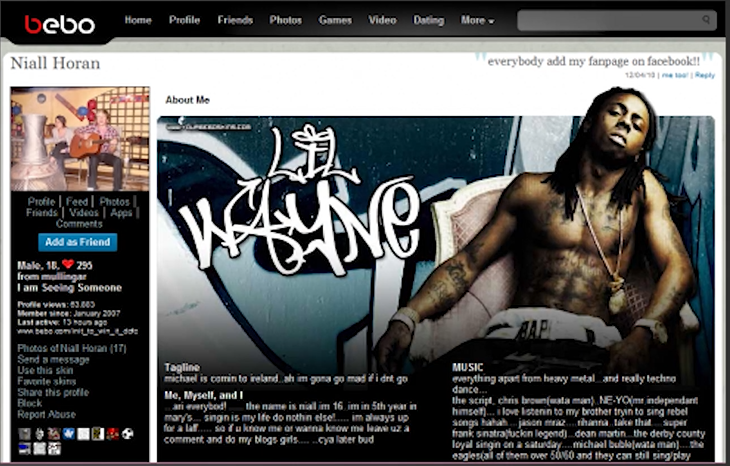

Published: September 16, 2025
Anyone else feel like social media has become pretty mundane? Maybe that appeals more to young adults and most of millennials, but I remember when social media use to have this wonder to it. Ya know?
When I was younger, myspace pretty much dominated the social media landscape. To give you some background, 2005 was a revolutionary year for the Internet and social media. Million were creating accounts...This was the Internets first modern social network. Myspace reigned lasted until 2009 with the launch of Facebook and still the most popular social media platyform in the world for reasons unknown.
Somewhere around 2007-2008-ish, there was also another platform gaining traction..Say hello to Bebo!
Bebo was quirky and customisable and it didn't take itself too seriously. This forgotten relic of internet history..
If you remember using Bebo back in the day then you officially qualify for a veterans discount..
As you can see, it looks like normal profile but being given all these customisations, the ability to add skins and wallpapers, adding photos, videos, profile taglines. And one of my all time favourites: adding music to play everytime someone visits your profile.
This shit was real deal revolutionary for my generation. It totally changed the game. Bebo was seen as social media for middle and high school kids, while Facebook was more for adults and young professionals. Myspace was somewhere in the middle.
If something like Bebo were to released today, I don't at all think it would gain any traction mainly due to how dull social media has become over the years. I don't find longform writing or posting dull but the way it's carried out and the way people respond to one another has become a bit predictive. I am especially beginning to find conversation threads and newsfeeds incredibly monotonous.
So, what would a different type of social media look like?
As of now, I haven't stumbled upon any type of groundbreaking ideas that could compete with the current social media tech giants. Why do we need like 4 different versions of twitter?? or X or whatever the fuck.
Maybe breaking into this space requires a change to the design..There's no reason why social media platforms should've lost their wonder.
The idea for thoughtspace came to mind several months back sometime around late 2024, early 2025.
What would a social media platform with no threads or newsfeed look like?
I've been sitting on this idea for a while now..
.